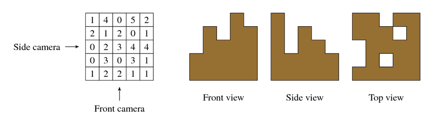
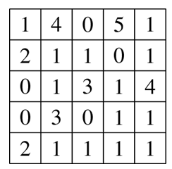

那是春日里一个天气晴朗的好日子,你准备去见见你的老朋友Patrick,也是你之前的犯罪同伙。Patrick在编程竞赛
上豪赌输掉了一大笔钱,所以他需要再干一票。为此他需要你的帮助,虽然你已经金盆洗手了。你刚开始很不情愿,
因为你一点也不想再回到那条老路上了,但是你觉得听一下他的计划也无伤大雅。在附近的一个仓库里有一批货物,
包含一些贵重的消费性部件,Patrick企图从中尽可能多地偷些东西出来。这意味着要找一条进去的路,弄晕安保人
员,穿过各种各样的激光射线,你懂的,都是常见的抢劫技术。然而,仓库的核心装备了一套Patrick搞不定的安保系
统。这也是他需要你帮助他的地方。这批货物被放置在一些巨大的立方体箱里,每个箱子的尺寸都是相同的。这些
箱子堆放成许多整齐的堆,每个箱子可以表示成一个三维的网格。安保系统每个小时会用三台相机对这堆货物进行
一次拍照,相机分别为:前置相机(front camera),侧置相机(side camera)和顶置相机(top camera)。前置相机的照
片显示了每一行最高的那堆箱子的高度,侧置相机显示了每一列最高的那堆箱子的高度,顶置相机显示了每个位置是
否存在一堆箱子。如果安保系统发现任何一张照片出现了变化,它会立即拉响警报。一旦 Patrick 进去了,他会确
定每堆箱子的高度并且发给你。图1显示了一种网格可能的放置,以及每台相机会得到的视图。

图 1. 网格的高度值与对应的相机视图。

图 2. 洗劫后网格可能的高度值。
Patrick想尽可能多偷走一些箱子。由于他不能弄坏安保系统,他准备重新安排剩余每堆箱子的放置,使得下一次相
机取像时会得到相同的照片,从而骗过安保系统。在上面的例子中,他可以偷走九个箱子。图2显示了一种可能的剩
余箱子的安置方案能使得安保系统认为与原安置情况相同。Patrick想请你帮他确定在保证能骗过安保系统的情况
下他最多能偷走多少个箱子。你会帮他干完这最后一票么?